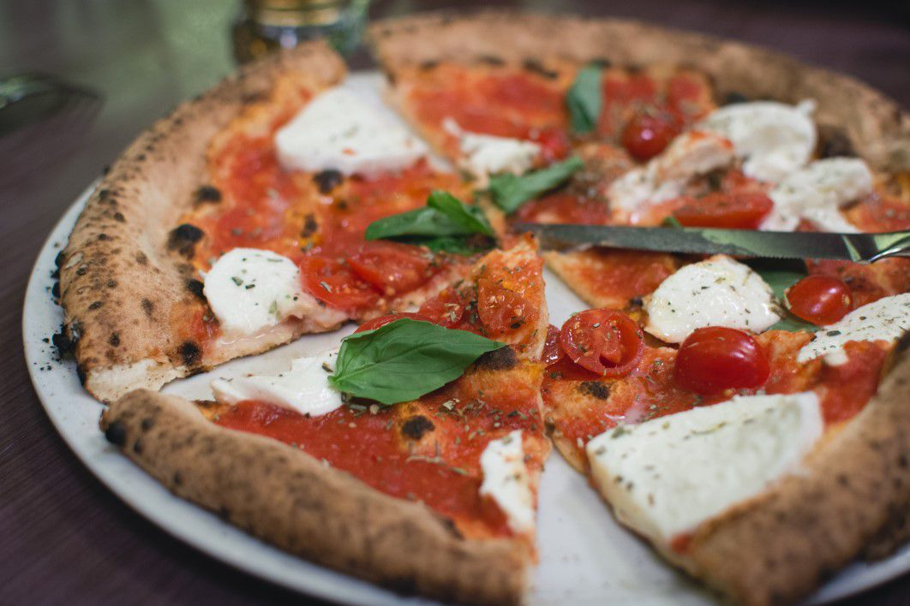

Easy Homemade Pizza Recipe
Home

Description
Homemade Margherita pizza. If you're looking for a classic Italian pizza with everyday ingredients, this recipe is for you.
As far as the ingredients goes, this recipe only contains fresh pizza sauce,
mozzarella cheese, and fresh basil.
Ingredients
Homemade Pizza Dough
- 2 1/2 cups (300g) unbleached all-purpose flour
- 1 teaspoon granulated sugar
- 1/2 teaspoon active dry yeast
- 3/4 teaspoon kosher salt
- 7 ounces warm water
- 1 tablespoon extra virgin olive oil
- semolina and all-puspose flour
Pizza Sauce
- 1 cup pureed or crushed canned tomatoes
- 2-3 fresh garlic cloves
- 1 teaspoon extra virgin olive oil
- 2-3 large pinches of kosher salt
- 1/4 teaspoon freshly ground black peppers
Toppings
- 2-3 tablespoons finely grated parmigiano-reggiano cheese
- 7 ounces fresh mozzarella cheese
- 5-6 large basil leaves
- dried red pepper flakes